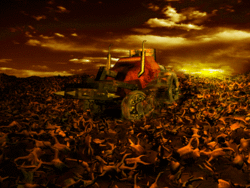
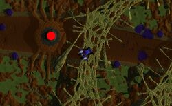
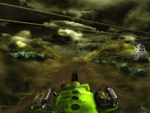

Vangers is a racing role-playing video game developed by K-D Lab, a Russian company.
It was released in North America in June 29, 1998 after receiving positive responses at that year's E3.
An updated re-release was made available on Steam and GOG.com in 2014. The re-release includes support for Mac OS X and Linux.
At the beginning of a new game the player is provided with text introduction to the major events of the game world genesis.
According to the introduction, a faction of advanced humans, termed as Spirits, at some point in time gains a technology of creating the Passages between different worlds,
the source of technology being Spirits' transcendental contacts.

With this knowledge humans undertake rushed construction of the Passages and the new worlds colonization.
These events are portrayed in the later Perimeter game, which is the prequel to Vangers.The game of Vangers starts with the Bios of Eleepods producing the player-Vanger.
Gameplay-wise, player sees oneself as an automobile-like existence
(although protected with regenerating shields, able to be outfitted with weapons and capable of making jumps)
in the world-exploration mode. When entering the cities, the player reads the narrations of Bios representatives, is allowed to use the trading facilities, and can ask patterned
questions of "what or who is", about the notions encountered to the point in game. Advancing the plot requires gaining the favor of Bioses, which means for player character to
successfully participate in their rituals, to transport goods, to compete with and destroy other, computer-controlled Vangers.
Worlds in Vangers were designed by means of Surmap A.R.T., K-D Lab's proprietary terrain editor, and the accompanying voxel-polygonal technology.
Minor worlds are modeled to occupy torus surfaces, while three major inhabited worlds form the side surfaces of long cylinders
(or rather tori with a single strong barrier set poloidally).

Objects of the world are destructible, e.g. vehicle wheels and other impacts leave traces on the ground.
Scripted conditional processes are set to affect the terrain. There is a player-controlled option to either keep all changes to the terrain on the hard disk or
discard the changes each time the game starts.
The game received mixed reviews according to the review aggregation website GameRankings. Next Generation said,
"It's a shame there wasn't a quick-action mode to simply jump in and enjoy the game because what fun there is to be had is buried deep within the pages of a convoluted science-fiction script. Sorry, folks, being weird doesn't always work. Still, if you like the story and don't mind reading a lot of text, there is a fun game here."
Charles Ardai of Computer Gaming World praised the game for its dark, detailed combat  simulation with "ten strange and wonderful worlds filled with alien creatures and constructs". The game was "aggressively" priced at US$29.95. However, he found the controls confusing and the futuristic vocabulary contrived. In addition, the README file contained solutions to all of the puzzles in the game. In 2008, work began on porting the game to Linux and other operating systems, utilizing the SDL library for cross-platform compatibility. In April 2014 the new version was digitally re-released on Steam and later on the DRM-free service GOG.com for Linux, Mac OS X, and Windows. Unfortunately, multiplayer support has been removed. In March 2016, the Vangers source code was released under the GNU GPL-3.0-only license. As the art content was not released as freely redistributable freeware (or open content), the data files from the digital re-releases on GOG.com and Steam are required to run the game.